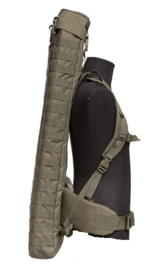
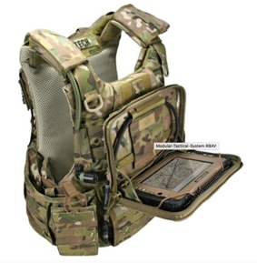
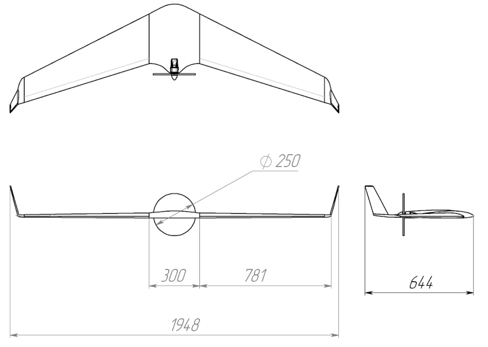
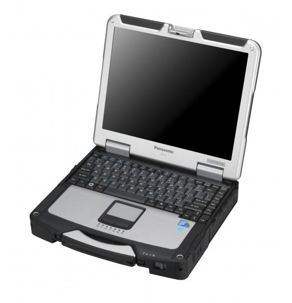
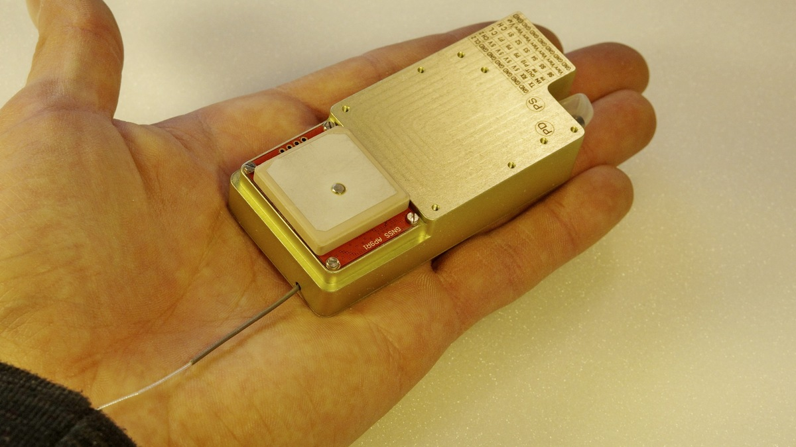
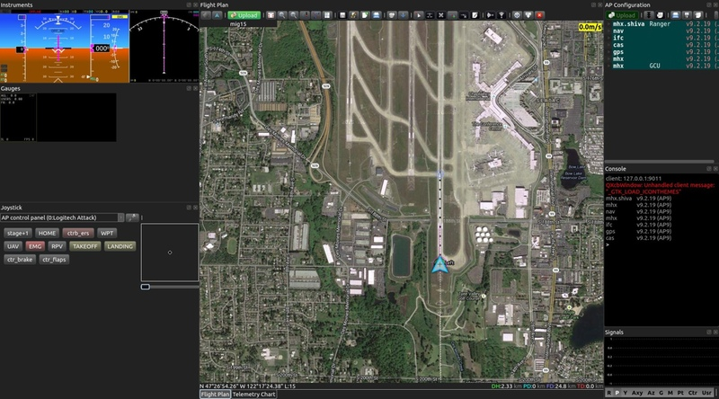
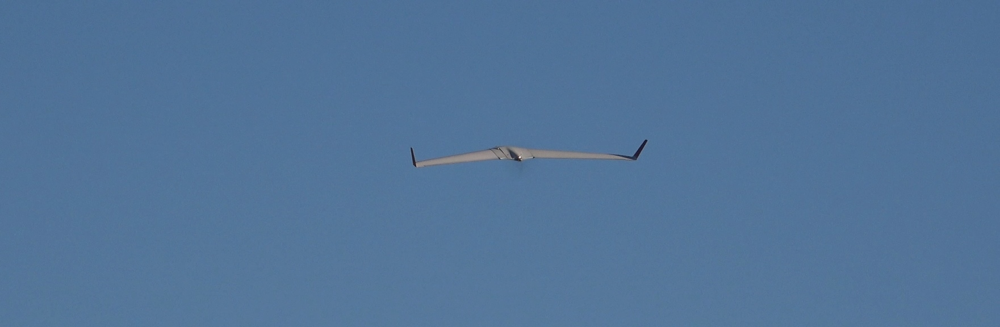

Беспилотный авиационный комплекс воздушной разведки «PETREL 2E»
{kind=link}
Описание комплекса «PETREL 2Е»
Комплекс «PETREL 2Е» предназначен для миссий по наблюдению за местностью, подвижными и неподвижными объектами.
«PETREL 2» — аппарат с высокими лётными данными и надёжной конструкцией. Одной из инженерных задач, поставленных при разработке данного БЛА, была минимизация количества узлов и компонентов, которые могли бы привести к внештатным ситуациям. Конструктивно-силовая схема выдерживает жесткую посадку с перегрузкой до 5g и любые полётные нагрузки на любых скоростях. Подготовка к полёту предусматривает присоединение консолей, при этом механический привод управления элерона подсоединяется автоматически, это значит, что электрические разъёмы в полевых условиях не подсоединяются (за исключением разъёмов антенн).
С аккумулятором 8Ah 4S аппарат способен подняться на 4,5 км или летать 1,5 часа на скорости 50 км/ч. Для миссий с продолжительностью полёта 2 часа и более предусмотрена установка аккумулятора повышенной ёмкости в центроплане (8Ah 6S), либо 2-х аккумуляторов 8Ah 4S в консоли крыла.
Настраиваемый таймер автоматического запуска двигателя после действия перегрузки старта полностью исключает человеческий фактор при запуске двигателя.
Посадка может осуществляться на ровное поле с травой по-самолетному или на парашюте. Навигационная система БЛА способна выполнять полет в условиях отсутствия спутниковых радионавигационных сигналов с незначительной (1,5 – 2 км на час полета) ошибкой по навигации.
 В мобильной модификации вместо электрической катапульты используется миниатюрная катапульта на основе резинового жгута и винтового колышка. Вес мобильной катапульты не превышает 2,5 кг. Комплекс переносится в полужестком рюкзаке.
Доступна модификация с планшетным компьютером и подвеской на грудь разгрузочного жилета.
БЛА «PETREL 2»

Описание
БЛА «PETREL 2» является беспилотным летательным аппаратом с аэродинамической схемой летающего крыла. Силовая установка выполнена на базе электрического двигателя с низким уровнем шума и вибрации.
Возможны следующие виды полезной нагрузки:
– Дневная камера
– Тепловизор
Катапульта
Запуск с рук летательного аппарата, с расположенным сзади винтом, может быть затруднительным и опасным для оператора и его помощников, катапульта же позволяет производить безопасные запуски, стабильно придавая необходимую начальную скорость. Старт осуществляется по нажатию кнопки на выносной ручке.
Для запуска аппаратов данного типа распространены катапульты с резиновым шнуром. Электрическая катапульта по массо-габаритным параметрам не уступает аналогам с резиновым шнуром, но имеет следующие преимущества:
- В электрической катапульте не меняется энергия метания от изменений температуры среды.
- Не меняется ускорение на всей длине направляющей, что позволяет иметь большую скорость схода при меньшей длине катапульты.
- Простота регулирования скорости схода аппарата.
- Запуски можно производить с минимальными паузами, так как не требуется взвод.
Также катапульта с резиновым жгутом считается менее безопасной, так как есть опасность обрыва жгута и травмирования оператора.
{kind=link}
Эксплуатация
| Параметры | Значения |
|---|---|
| Диапазон рабочих температур | -5 °С – +45 °С |
| Запуск | Катапульта или резиновый шнур |
| Режимы управления 1. основной 2. вспомогательный 3. резервный 4. аварийный |
Полностью автоматический Полуавтоматический Ручной (Дистанционное управление) Автоматический |
| Взлет и посадка на парашюте | Полностью автоматические |
| Приземление | По-самолетному или парашют |
| Наземные средства посадки | Не требуются |
| Хранение | Полужесткий контейнер |
| Вес аппарата и НСУ | В контейнере, не более 12 кг, включая мобильную катапульту |
| Вес электрической катапульты | В мягкой упаковке не более 8 кг. |
Тактико-технические характеристики БЛА «PETREL 2»
| Параметр | Данные |
|---|---|
| Диапазон скоростей | 45 – 110 км/ч |
| Крейсерская скорость | 50 км/ч |
| Скорость сваливания | 40 км/ч |
| Взлетная скорость (катапульта) | 47 км/ч |
| Размах крыла (полностью раскрыто) | 1,95 м |
| Длина | 0,65 м |
| Тип двигателя | Электрический |
| Полезная нагрузка | 0,3 кг |
| Масса пустого самолета | 2,5 кг |
| Максимальный взлетный вес | 2,8 кг |
| Максимальная скороподъемность | 5 м/сек |
| Минимальная высота раскрытия парашюта | 15 м |
| Скорость снижение на парашюте | 5 м/с |
| Максимальная высота | 4500 м |
| Время полета | 1,5 часа |
| Практическая дальность (скорость 50 км/ч) | 75 км |
| Бортовое питание (постоянный ток) | 12 В |
Тактико-технические характеристики полезной нагрузки БЛА «PETREL 2»
| Параметр | Данные |
|---|---|
| Дневная камера (съемка фото и видео) | CMOS 2,3″ 12 Мп. Макс. разрешение - UHD |
| Дальность передачи видео при прямой радиовидимости | До 20 км в HD качестве, с направленной антенной |
| Запись видео на борту | UHD (4K) 64 Гб |
Портативный командный модуль «PETREL 2Е»
 Командный модуль БАК «PETREL 2Е» включает в себя комплект оборудования для связи и управления. Он выполнен на базе защищенного ноутбука Panasonic Toughbook CF-31 mk5, в состав также входит переносная направленная антенна для видео и всенаправленная антенна для командной линии в комплекте со штативом.
Характеристики:
| Параметр | Данные |
|---|---|
| Температурный диапазон | -30°C – +60°С |
| Размеры: | 302 мм х 73,5 мм х 292 мм |
| Время автономной работы | до 8 часов |
| Вес | 3,75 кг + 0,5 кг |
Программное обеспечение и система автоматического управления БАК «PETREL 2Е»
Аппарат управляется посредством Системы автоматического управления в мини исполнении. Специально для данного БЛА был разработан сверхкомпактный корпус, включающий в себя все необходимые модули.
Управление и контроль с земли производится с помощью специализированного программного обеспечения.
Комплекс поставляется с полным комплектом документации, включая руководства по эксплуатации и обслуживанию летательного аппарата, а также руководство по эксплуатации САУ. При необходимости, заказчик может пройти обучение по следующим курсам: "Оператор БЛА", "Оператор полезной нагрузки", "Техник БЛА".
Демонстрационное видео
